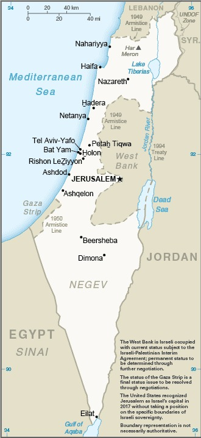
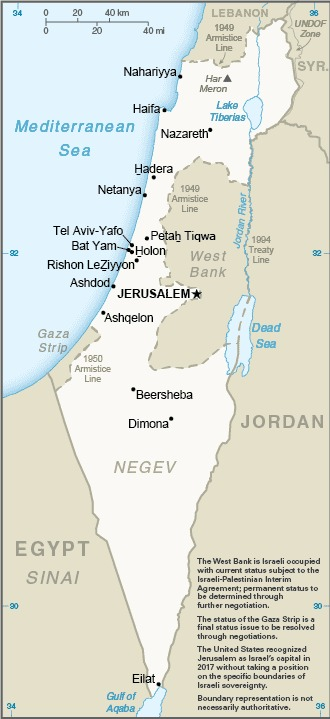

-
Introduction :: Israel
-
Background:The State of Israel was declared in 1948, after Britain withdrew from its mandate of Palestine. The UN proposed partitioning the area into Arab and Jewish states, and Arab armies that rejected the UN plan were defeated. Israel was admitted as a member of the UN in 1949 and saw rapid population growth, primarily due to migration from Europe and the Middle East, over the following years. Israel fought wars against its Arab neighbors in 1967 and 1973, followed by peace treaties with Egypt in 1979 and Jordan in 1994. Israel took control of the West Bank and Gaza Strip in the 1967 war, and subsequently administered those territories through military authorities. Israel and Palestinian officials signed a number of interim agreements in the 1990s that created an interim period of Palestinian self-rule in the West Bank and Gaza. Israel withdrew from Gaza in 2005. While the most recent formal efforts to negotiate final status issues occurred in 2013-2014, the US continues its efforts to advance peace. Immigration to Israel continues, with 28,600 new immigrants, mostly Jewish, in 2016. The Israeli economy has undergone a dramatic transformation in the last 25 years, led by cutting-edge, high-tech sectors. Offshore gas discoveries in the Mediterranean, most notably in the Tamar and Leviathan gas fields, place Israel at the center of a potential regional natural gas market. However, longer-term structural issues such as low labor force participation among minority populations, low workforce productivity, high costs for housing and consumer staples, and a lack of competition, remain a concern for many Israelis and an important consideration for Israeli politicians. Prime Minister Benjamin NETANYAHU has led the Israeli Government since 2009; he formed a center-right coalition following the 2015 elections. Three Knesset elections held in April and September 2019 and March 2020 all failed to form a new government. The political stalemate was finally resolved in April 2020 when NETANYAHU and Blue and White party leader Benny GANTZ signed an agreement to form a coalition government. Under the terms of the agreement, NETANYAHU would remain as prime minister until October 2021 when GANTZ would succeed him. On 15 September 2020, Israel signed a peace agreement, the Abraham Accords – brokered by the US – with Bahrain and the United Arab Emirates in Washington DC. Israel signed similar peace agreements with Egypt (1979) and Jordan (1994).
-
Geography :: Israel
-
Location:Middle East, bordering the Mediterranean Sea, between Egypt and LebanonGeographic coordinates:31 30 N, 34 45 EMap references:Middle EastArea:total: 21,937 sq kmland: 21,497 sq kmwater: 440 sq kmcountry comparison to the world: 152Area - comparative:slightly larger than New JerseyArea comparison map:
 The World Factbook Field Image ModalMiddle East :: Israel Print
The World Factbook Field Image ModalMiddle East :: Israel Print Image DescriptionLand boundaries:total: 1,065 kmborder countries (6): Egypt 206 km, Gaza Strip 59 km, Jordan 336 km (20 km are within the Dead Sea), Lebanon 107 km, Syria 79 km, West Bank 278 kmCoastline:273 kmMaritime claims:territorial sea: 12 nmcontinental shelf: to depth of exploitationClimate:temperate; hot and dry in southern and eastern desert areasTerrain:Negev desert in the south; low coastal plain; central mountains; Jordan Rift ValleyElevation:mean elevation: 508 m note - does not include elevation data from the Golan Heightslowest point: Dead Sea -431 mhighest point: Mitspe Shlagim 2,224 m; note - this is the highest named point, the actual highest point is an unnamed dome slightly to the west of Mitspe Shlagim at 2,236 m; both points are on the northeastern border of Israel, along the southern end of the Anti-Lebanon mountain rangeNatural resources:timber, potash, copper ore, natural gas, phosphate rock, magnesium bromide, clays, sandLand use:agricultural land: 23.8% (2011 est.)arable land: 13.7% (2011 est.) / permanent crops: 3.8% (2011 est.) / permanent pasture: 6.3% (2011 est.)forest: 7.1% (2011 est.)other: 69.1% (2011 est.)Irrigated land:2,250 sq km (2012)Population distribution:population concentrated in and around Tel-Aviv, as well as around the Sea of Galilee; the south remains sparsely populated with the exception of the shore of the Gulf of AqabaNatural hazards:sandstorms may occur during spring and summer; droughts; periodic earthquakesEnvironment - current issues:limited arable land and restricted natural freshwater resources; desertification; air pollution from industrial and vehicle emissions; groundwater pollution from industrial and domestic waste, chemical fertilizers, and pesticidesEnvironment - international agreements:party to: Biodiversity, Climate Change, Climate Change-Kyoto Protocol, Desertification, Endangered Species, Hazardous Wastes, Ozone Layer Protection, Ship Pollution, Wetlands, Whalingsigned, but not ratified: Marine Life ConservationGeography - note:note 1: Lake Tiberias (Sea of Galilee) is an important freshwater source; the Dead Sea is the second saltiest body of water in the world (after Lake Assal in Djibouti)
Image DescriptionLand boundaries:total: 1,065 kmborder countries (6): Egypt 206 km, Gaza Strip 59 km, Jordan 336 km (20 km are within the Dead Sea), Lebanon 107 km, Syria 79 km, West Bank 278 kmCoastline:273 kmMaritime claims:territorial sea: 12 nmcontinental shelf: to depth of exploitationClimate:temperate; hot and dry in southern and eastern desert areasTerrain:Negev desert in the south; low coastal plain; central mountains; Jordan Rift ValleyElevation:mean elevation: 508 m note - does not include elevation data from the Golan Heightslowest point: Dead Sea -431 mhighest point: Mitspe Shlagim 2,224 m; note - this is the highest named point, the actual highest point is an unnamed dome slightly to the west of Mitspe Shlagim at 2,236 m; both points are on the northeastern border of Israel, along the southern end of the Anti-Lebanon mountain rangeNatural resources:timber, potash, copper ore, natural gas, phosphate rock, magnesium bromide, clays, sandLand use:agricultural land: 23.8% (2011 est.)arable land: 13.7% (2011 est.) / permanent crops: 3.8% (2011 est.) / permanent pasture: 6.3% (2011 est.)forest: 7.1% (2011 est.)other: 69.1% (2011 est.)Irrigated land:2,250 sq km (2012)Population distribution:population concentrated in and around Tel-Aviv, as well as around the Sea of Galilee; the south remains sparsely populated with the exception of the shore of the Gulf of AqabaNatural hazards:sandstorms may occur during spring and summer; droughts; periodic earthquakesEnvironment - current issues:limited arable land and restricted natural freshwater resources; desertification; air pollution from industrial and vehicle emissions; groundwater pollution from industrial and domestic waste, chemical fertilizers, and pesticidesEnvironment - international agreements:party to: Biodiversity, Climate Change, Climate Change-Kyoto Protocol, Desertification, Endangered Species, Hazardous Wastes, Ozone Layer Protection, Ship Pollution, Wetlands, Whalingsigned, but not ratified: Marine Life ConservationGeography - note:note 1: Lake Tiberias (Sea of Galilee) is an important freshwater source; the Dead Sea is the second saltiest body of water in the world (after Lake Assal in Djibouti)
note 2: the Malham Cave in Mount Sodom is the world's longest salt cave at 10 km (6 mi); its survey is not complete and its length will undoubtedly increase; Mount Sodom is actually a hill some 220 m (722 ft) high that is 80% salt (multiple salt layers covered by a veneer of rock)
note 3: in March 2019, there were 380 Israeli settlements,to include 213 settlements and 132 outposts in the West Bank, and 35 settlements in East Jerusalem; there are no Israeli settlements in the Gaza Strip, as all were evacuated in 2005 (2019) -
People and Society :: Israel
-
Population:8,675,475 (includes populations of the Golan Heights or Golan Sub-District and also East Jerusalem, which was annexed by Israel after 1967) (July 2020 est.)
note: approximately 22,900 Israeli settlers live in the Golan Heights (2018); approximately 215,900 Israeli settlers live in East Jerusalem (2017)
country comparison to the world: 98Nationality:noun: Israeli(s)adjective: IsraeliEthnic groups:Jewish 74.4% (of which Israel-born 76.9%, Europe/America/Oceania-born 15.9%, Africa-born 4.6%, Asia-born 2.6%), Arab 20.9%, other 4.7% (2018 est.)Languages:Hebrew (official), Arabic (special status under Israeli law), English (most commonly used foreign language)Religions:Jewish 74.3%, Muslim 17.8%, Christian 1.9%, Druze 1.6%, other 4.4% (2018 est.)MENA religious affiliation: PDFAge structure:0-14 years: 26.76% (male 1,187,819/female 1,133,365)15-24 years: 15.67% (male 694,142/female 665,721)25-54 years: 37.2% (male 1,648,262/female 1,579,399)55-64 years: 8.4% (male 363,262/female 365,709)65 years and over: 11.96% (male 467,980/female 569,816) (2020 est.)population pyramid: The World Factbook Field Image ModalMiddle East :: Israel Print
The World Factbook Field Image ModalMiddle East :: Israel Print Image DescriptionThis is the population pyramid for Israel. A population pyramid illustrates the age and sex structure of a country's population and may provide insights about political and social stability, as well as economic development. The population is distributed along the horizontal axis, with males shown on the left and females on the right. The male and female populations are broken down into 5-year age groups represented as horizontal bars along the vertical axis, with the youngest age groups at the bottom and the oldest at the top. The shape of the population pyramid gradually evolves over time based on fertility, mortality, and international migration trends.
Image DescriptionThis is the population pyramid for Israel. A population pyramid illustrates the age and sex structure of a country's population and may provide insights about political and social stability, as well as economic development. The population is distributed along the horizontal axis, with males shown on the left and females on the right. The male and female populations are broken down into 5-year age groups represented as horizontal bars along the vertical axis, with the youngest age groups at the bottom and the oldest at the top. The shape of the population pyramid gradually evolves over time based on fertility, mortality, and international migration trends.
For additional information, please see the entry for Population pyramid on the Definitions and Notes page under the References tab.Dependency ratios:total dependency ratio: 67.3youth dependency ratio: 46.6elderly dependency ratio: 20.8potential support ratio: 4.8 (2020 est.)Median age:total: 30.4 yearsmale: 29.8 yearsfemale: 31 years (2020 est.)country comparison to the world: 121Population growth rate:1.46% (2020 est.)country comparison to the world: 73Birth rate:17.6 births/1,000 population (2020 est.)country comparison to the world: 93Death rate:5.3 deaths/1,000 population (2020 est.)country comparison to the world: 189Net migration rate:2.1 migrant(s)/1,000 population (2020 est.)country comparison to the world: 47Population distribution:population concentrated in and around Tel-Aviv, as well as around the Sea of Galilee; the south remains sparsely populated with the exception of the shore of the Gulf of AqabaUrbanization:urban population: 92.6% of total population (2020)rate of urbanization: 1.64% annual rate of change (2015-20 est.)total population growth rate v. urban population growth rate, 2000-2030: PDFMajor urban areas - population:4.181 million Tel Aviv-Yafo, 1.147 million Haifa, 932,000 JERUSALEM (capital) (2020)Sex ratio:at birth: 1.05 male(s)/female0-14 years: 1.05 male(s)/female15-24 years: 1.04 male(s)/female25-54 years: 1.04 male(s)/female55-64 years: 0.99 male(s)/female65 years and over: 0.82 male(s)/femaletotal population: 1.01 male(s)/female (2020 est.)Mother's mean age at first birth:27.6 years (2017 est.)Maternal mortality rate:3 deaths/100,000 live births (2017 est.)country comparison to the world: 179Infant mortality rate:total: 3.3 deaths/1,000 live birthsmale: 3.3 deaths/1,000 live birthsfemale: 3.3 deaths/1,000 live births (2020 est.)country comparison to the world: 207Life expectancy at birth:total population: 83 yearsmale: 81.1 yearsfemale: 85 years (2020 est.)country comparison to the world: 10Total fertility rate:2.59 children born/woman (2020 est.)country comparison to the world: 67Drinking water source:improved: urban: 100% of populationrural: 100% of populationtotal: 100% of populationunimproved: urban: 0% of populationrural: 0% of populationtotal: 0% of population (2017 est.)Current Health Expenditure:7.4% (2017)Physicians density:3.48 physicians/1,000 population (2017)Hospital bed density:3 beds/1,000 population (2017)Sanitation facility access:improved: urban: 100% of populationrural: 100% of populationtotal: 100% of populationunimproved: urban: 0% of populationrural: 0% of populationtotal: 0% of population (2017 est.)HIV/AIDS - adult prevalence rate:0.2% (2018)country comparison to the world: 100HIV/AIDS - people living with HIV/AIDS:9,000 (2018)country comparison to the world: 108HIV/AIDS - deaths:<100 (2018)Obesity - adult prevalence rate:26.1% (2016)country comparison to the world: 44Education expenditures:6.1% of GDP (2017)country comparison to the world: 25Literacy:definition: age 15 and over can read and writetotal population: 97.8%male: 98.7%female: 96.8% (2011)School life expectancy (primary to tertiary education):total: 16 yearsmale: 16 yearsfemale: 17 years (2018)Unemployment, youth ages 15-24:total: 7.2%male: 6.9%female: 7.4% (2018 est.)country comparison to the world: 149 -
Government :: Israel
-
Country name:conventional long form: State of Israelconventional short form: Israellocal long form: Medinat Yisra'ellocal short form: Yisra'eletymology: named after the ancient Kingdom of Israel; according to Biblical tradition, the Jewish patriarch Jacob received the name "Israel" ("He who struggles with God") after he wrestled an entire night with an angel of the Lord; Jacob's 12 sons became the ancestors of the Israelites, also known as the Twelve Tribes of Israel, who formed the Kingdom of IsraelGovernment type:parliamentary democracyCapital:name: Jerusalem; note - the US recognized Jerusalem as Israel’s capital in December 2017 without taking a position on the specific boundaries of Israeli sovereigntygeographic coordinates: 31 46 N, 35 14 Etime difference: UTC+2 (7 hours ahead of Washington, DC, during Standard Time)daylight saving time: +1hr, Friday before the last Sunday in March; ends the last Sunday in Octoberetymology: Jerusalem's settlement may date back to 2800 B.C.; it is named Urushalim in Egyptian texts of the 14th century B.C.; "uru-shalim" likely means "foundation of [by] the god Shalim", and derives from Hebrew/Semitic "yry", "to found or lay a cornerstone", and Shalim, the Canaanite god of dusk and the nether world; Shalim was associated with sunset and peace and the name is based on the same S-L-M root from which Semitic words for "peace" are derived (Salam or Shalom in modern Arabic and Hebrew); this confluence has thus led to naming interpretations such as "The City of Peace" or "The Abode of Peace"Administrative divisions:6 districts (mehozot, singular - mehoz); Central, Haifa, Jerusalem, Northern, Southern, Tel AvivIndependence:14 May 1948 (following League of Nations mandate under British administration)National holiday:Independence Day, 14 May (1948); note - Israel declared independence on 14 May 1948, but the Jewish calendar is lunar and the holiday may occur in April or MayConstitution:history: no formal constitution; some functions of a constitution are filled by the Declaration of Establishment (1948), the Basic Laws, and the Law of Return (as amended)amendments: proposed by Government of Israel ministers or by the Knesset; passage requires a majority vote of Knesset members and subject to Supreme Court judicial review; 11 of the 13 Basic Laws have been amended at least once, latest in 2020Legal system:mixed legal system of English common law, British Mandate regulations, and Jewish, Christian, and Muslim religious lawsInternational law organization participation:has not submitted an ICJ jurisdiction declaration; withdrew acceptance of ICCt jurisdiction in 2002Citizenship:citizenship by birth: nocitizenship by descent only: at least one parent must be a citizen of Israeldual citizenship recognized: yes, but naturalized citizens are not allowed to maintain dual citizenshipresidency requirement for naturalization: 3 out of the 5 years preceding the application for naturalization
note: Israeli law (Law of Return, 5 July 1950) provides for the granting of citizenship to any Jew - defined as a person being born to a Jewish mother or having converted to Judaism while renouncing any other religion - who immigrates to and expresses a desire to settle in Israel on the basis of the Right of aliyah; the 1970 amendment of this act extended the right to family members including the spouse of a Jew, any child or grandchild, and the spouses of children and grandchildren
Suffrage:18 years of age; universal; 17 years of age for municipal electionsExecutive branch:chief of state: President Reuben RIVLIN (since 27 July 2014)head of government: Prime Minister Binyamin NETANYAHU (since 31 March 2009)cabinet: Cabinet selected by prime minister and approved by the Knessetelections/appointments: president indirectly elected by the Knesset for a single 7-year term; election last held on 10 June 2014 (next to be held in 2021); following legislative elections, the president, in consultation with party leaders, tasks a Knesset member (usually the member of the largest party) with forming a governmentelection results: Reuven RIVLIN elected president in second round; Knesset vote - Reuven RIVLIN (Likud) 63, Meir SHEETRIT (The Movement) 53, other/invalid 4; note - on 20 May 2020 – after three national elections, each ending in failed bids by Prime Minister Binyamin NETANYAHU and Blue and White party leader Benny GANTZ to form a coalition government, both signed an agreement on the formation of a national emergency government in which NETANYAHU continues as prime minister for 18 months when GANTZ will replace himLegislative branch:description: unicameral Knesset (120 seats; members directly elected in a single nationwide constituency by closed-list proportional representation vote, with a 3.25% threshold to gain representation; members serve 4-year terms)elections: last held on 2 March 2020 ( next to be held in 2024)election results: percent by party (preliminary) - Likud 29.2%, Blue and White 26.4%, Joint List 13.1%, Shas 7.7%, United Torah Judaism 6.2%, Yisrael Beiteinu 5.9%, Labor-Gesher-Meretz 5.7%, Yamina 5%, other 0.8%; seats by party (preliminary) - Likud 36, Blue and White 33, Joint List 15, Shas 9, United Torah Judaism 7, Yisrael Beiteinu 7, Labor-Gesher Meretz 7, Yamina 6; composition - NAJudicial branch:highest courts: Supreme Court (consists of the president, deputy president, 13 justices, and 2 registrars) and normally sits in panels of 3 justices; in special cases, the panel is expanded with an uneven number of justicesjudge selection and term of office: judges selected by the 9-member Judicial Selection Committee, consisting of the Minister of Justice (chair), the president of the Supreme Court, two other Supreme Court justices, 1 other Cabinet minister, 2 Knesset members, and 2 representatives of the Israel Bar Association; judges can serve up to mandatory retirement at age 70subordinate courts: district and magistrate courts; national and regional labor courts; family and juvenile courts; special and religious courtsPolitical parties and leaders:Democratic Union [Nitzan HOROWITZ] (alliance includes Democratic Israel, Meretz, Green Movement)
Joint List [Ayman ODEH] (alliance includes Hadash, Ta’al, United Arab List, Balad)
Kahol Lavan [Benny GANTZ] (alliance includes Israeli Resilience, Yesh Atid, Telem)
Labor-Gesher [Amir PERETZ]
Likud [Binyamin NETANYAHU]
Otzma Yehudit [Itamar BEN-GVIR]
SHAS [Arye DERI]
United Torah Judaism, or UTJ [Yaakov LITZMAN] (alliance includes Agudat Israel and Degel HaTorah)
Yamina [Ayelet SHAKED]
Yisrael Beiteinu [Avigdor LIEBERMAN]
Zehut [Moshe FEIGLIN]International organization participation:BIS, BSEC (observer), CE (observer), CERN, CICA, EBRD, FAO, IADB, IAEA, IBRD, ICAO, ICC (national committees), ICRM, IDA, IFAD, IFC, IFRCS, ILO, IMF, IMO, IMSO, Interpol, IOC, IOM, IPU, ISO, ITSO, ITU, ITUC (NGOs), MIGA, OAS (observer), OECD, OPCW (signatory), OSCE (partner), Pacific Alliance (observer), Paris Club, PCA, SELEC (observer), UN, UNCTAD, UNESCO, UNHCR, UNIDO, UNWTO, UPU, WCO, WHO, WIPO, WMO, WTODiplomatic representation in the US:chief of mission: Ambassador Ron DERMER (since 3 December 2013)chancery: 3514 International Drive NW, Washington, DC 20008telephone: [1] (202) 364-5500FAX: [1] (202) 364-5607consulate(s) general: Atlanta, Boston, Chicago, Houston, Los Angeles, Miami, New York, Philadelphia, San FranciscoDiplomatic representation from the US:chief of mission: Ambassador David M. FRIEDMAN (since 23 May 2017)telephone: [972] (2) 630-4000embassy: David Flusser St.14, Jerusalem, 9378322FAX: NAnote: on 14 May 2018, the US Embassy relocated to Jerusalem from Tel Aviv; on 4 March 2019, Consulate General Jerusalem merged into US Embassy Jerusalem to form a single diplomatic mission
Flag description:white with a blue hexagram (six-pointed linear star) known as the Magen David (Star of David or Shield of David) centered between two equal horizontal blue bands near the top and bottom edges of the flag; the basic design resembles a traditional Jewish prayer shawl (tallit), which is white with blue stripes; the hexagram as a Jewish symbol dates back to medieval timesnote: the Israeli flag proclamation states that the flag colors are sky blue and white, but the exact shade of blue has never been set and can vary from a light to a dark blue
National symbol(s):Star of David (Magen David), menorah (seven-branched lampstand); national colors: blue, whiteNational anthem:name: "Hatikvah" (The Hope)lyrics/music: Naftali Herz IMBER/traditional, arranged by Samuel COHENnote: adopted 2004, unofficial since 1948; used as the anthem of the Zionist movement since 1897; the 1888 arrangement by Samuel COHEN is thought to be based on the Romanian folk song "Carul cu boi" (The Ox Driven Cart)
-
Economy :: Israel
-
Economic overview:
Israel has a technologically advanced free market economy. Cut diamonds, high-technology equipment, and pharmaceuticals are among its leading exports. Its major imports include crude oil, grains, raw materials, and military equipment. Israel usually posts sizable trade deficits, which are offset by tourism and other service exports, as well as significant foreign investment inflows.
Between 2004 and 2013, growth averaged nearly 5% per year, led by exports. The global financial crisis of 2008-09 spurred a brief recession in Israel, but the country entered the crisis with solid fundamentals, following years of prudent fiscal policy and a resilient banking sector. Israel's economy also weathered the 2011 Arab Spring because strong trade ties outside the Middle East insulated the economy from spillover effects.
Slowing domestic and international demand and decreased investment resulting from Israel’s uncertain security situation reduced GDP growth to an average of roughly 2.8% per year during the period 2014-17. Natural gas fields discovered off Israel's coast since 2009 have brightened Israel's energy security outlook. The Tamar and Leviathan fields were some of the world's largest offshore natural gas finds in the last decade. Political and regulatory issues have delayed the development of the massive Leviathan field, but production from Tamar provided a 0.8% boost to Israel's GDP in 2013 and a 0.3% boost in 2014. One of the most carbon intense OECD countries, Israel generates about 57% of its power from coal and only 2.6% from renewable sources.
Income inequality and high housing and commodity prices continue to be a concern for many Israelis. Israel's income inequality and poverty rates are among the highest of OECD countries, and there is a broad perception among the public that a small number of "tycoons" have a cartel-like grip over the major parts of the economy. Government officials have called for reforms to boost the housing supply and to increase competition in the banking sector to address these public grievances. Despite calls for reforms, the restricted housing supply continues to impact younger Israelis seeking to purchase homes. Tariffs and non-tariff barriers, coupled with guaranteed prices and customs tariffs for farmers kept food prices high in 2016. Private consumption is expected to drive growth through 2018, with consumers benefitting from low inflation and a strong currency.
In the long term, Israel faces structural issues including low labor participation rates for its fastest growing social segments - the ultraorthodox and Arab-Israeli communities. Also, Israel's progressive, globally competitive, knowledge-based technology sector employs only about 8% of the workforce, with the rest mostly employed in manufacturing and services - sectors which face downward wage pressures from global competition. Expenditures on educational institutions remain low compared to most other OECD countries with similar GDP per capita.
GDP real growth rate:3.28% (2019 est.)3.69% (2018 est.)3.63% (2017 est.)country comparison to the world: 91Inflation rate (consumer prices):0.8% (2019 est.)0.8% (2018 est.)0.2% (2017 est.)country comparison to the world: 57Credit ratings:Fitch rating: A+ (2016)Moody's rating: A1 (2008)Standard & Poors rating: AA- (2018)GDP (purchasing power parity) - real:$299.78 billion (2019 est.)$290.259 billion (2018 est.)$279.959 billion (2017 est.)note: data are in 2010 dollars
GDP (official exchange rate):$394.93 billion (2019 est.)GDP - per capita (PPP):$37,527 (2019 est.)$36,933 (2018 est.)$36,217 (2017 est.)note: data are in 2010 dollars
country comparison to the world: 44Gross national saving:23.6% of GDP (2017 est.)24.2% of GDP (2016 est.)25% of GDP (2015 est.)country comparison to the world: 72GDP - composition, by sector of origin:agriculture: 2.4% (2017 est.)industry: 26.5% (2017 est.)services: 69.5% (2017 est.)GDP - composition, by end use:household consumption: 55.1% (2017 est.)government consumption: 22.8% (2017 est.)investment in fixed capital: 20.1% (2017 est.)investment in inventories: 0.7% (2017 est.)exports of goods and services: 28.9% (2017 est.)imports of goods and services: -27.5% (2017 est.)Ease of Doing Business Index scores:94.1 (2020)Agriculture - products:citrus, vegetables, cotton; beef, poultry, dairy productsIndustries:high-technology products (including aviation, communications, computer-aided design and manufactures, medical electronics, fiber optics), wood and paper products, potash and phosphates, food, beverages, and tobacco, caustic soda, cement, pharmaceuticals, construction, metal products, chemical products, plastics, cut diamonds, textiles, footwearIndustrial production growth rate:3.5% (2017 est.)country comparison to the world: 86Labor force:3.893 million (2020 est.)country comparison to the world: 91Labor force - by occupation:agriculture: 1.1%industry: 17.3%services: 81.6% (2015 est.)Unemployment rate:3.81% (2019 est.)4% (2018 est.)country comparison to the world: 57Population below poverty line:22% (2014 est.) (2014 est.)note: Israel's poverty line is $7.30 per person per day
Budget:revenues: 93.11 billion (2017 est.)expenditures: 100.2 billion (2017 est.)Taxes and other revenues:26.5% (of GDP) (2017 est.)country comparison to the world: 110Budget surplus (+) or deficit (-):-2% (of GDP) (2017 est.)country comparison to the world: 105Public debt:60.9% of GDP (2017 est.)62.3% of GDP (2016 est.)country comparison to the world: 73Fiscal year:calendar yearCurrent account balance:$13.411 billion (2019 est.)$7.888 billion (2018 est.)country comparison to the world: 20Exports:$104.992 billion (2019 est.)$101.389 billion (2018 est.)$95.196 billion (2017 est.)country comparison to the world: 45Exports - partners:US 28.8%, UK 8.2%, Hong Kong 7%, China 5.4%, Belgium 4.5% (2017)Exports - commodities:machinery and equipment, software, cut diamonds, agricultural products, chemicals, textiles and apparelImports:$116.23 billion (2019 est.)$111.652 billion (2018 est.)$104.252 billion (2017 est.)country comparison to the world: 44Imports - commodities:raw materials, military equipment, investment goods, rough diamonds, fuels, grain, consumer goodsImports - partners:US 11.7%, China 9.5%, Switzerland 8%, Germany 6.8%, UK 6.2%, Belgium 5.9%, Netherlands 4.2%, Turkey 4.2%, Italy 4% (2017)Reserves of foreign exchange and gold:$113 billion (31 December 2017 est.)$95.45 billion (31 December 2016 est.)country comparison to the world: 23Debt - external:$88.66 billion (31 December 2017 est.)$87.96 billion (31 December 2016 est.)country comparison to the world: 54Exchange rates:new Israeli shekels (ILS) per US dollar -3.25 (2020 est.)3.4684 (2019 est.)3.7332 (2018 est.)3.8869 (2014 est.)3.5779 (2013 est.) -
Energy :: Israel
-
Electricity access:electrification - total population: 100% (2020)Electricity - production:63.09 billion kWh (2016 est.)country comparison to the world: 46Electricity - consumption:55 billion kWh (2016 est.)country comparison to the world: 47Electricity - exports:5.2 billion kWh (2016 est.)country comparison to the world: 35Electricity - imports:0 kWh (2016 est.)country comparison to the world: 161Electricity - installed generating capacity:17.59 million kW (2016 est.)country comparison to the world: 48Electricity - from fossil fuels:95% of total installed capacity (2016 est.)country comparison to the world: 43Electricity - from nuclear fuels:0% of total installed capacity (2017 est.)country comparison to the world: 113Electricity - from hydroelectric plants:0% of total installed capacity (2017 est.)country comparison to the world: 179Electricity - from other renewable sources:5% of total installed capacity (2017 est.)country comparison to the world: 107Crude oil - production:390 bbl/day (2018 est.)country comparison to the world: 94Crude oil - exports:0 bbl/day (2017 est.)country comparison to the world: 141Crude oil - imports:231,600 bbl/day (2017 est.)country comparison to the world: 28Crude oil - proved reserves:12.73 million bbl (1 January 2018 est.)country comparison to the world: 87Refined petroleum products - production:294,300 bbl/day (2017 est.)country comparison to the world: 42Refined petroleum products - consumption:242,200 bbl/day (2017 est.)country comparison to the world: 52Refined petroleum products - exports:111,700 bbl/day (2017 est.)country comparison to the world: 39Refined petroleum products - imports:98,860 bbl/day (2017 est.)country comparison to the world: 54Natural gas - production:9.826 billion cu m (2017 est.)country comparison to the world: 42Natural gas - consumption:9.995 billion cu m (2017 est.)country comparison to the world: 49Natural gas - exports:0 cu m (2017 est.)country comparison to the world: 126Natural gas - imports:509.7 million cu m (2017 est.)country comparison to the world: 66Natural gas - proved reserves:176 billion cu m (1 January 2018 est.)country comparison to the world: 45Carbon dioxide emissions from consumption of energy:73.82 million Mt (2017 est.)country comparison to the world: 49
-
Communications :: Israel
-
Telephones - fixed lines:total subscriptions: 3,050,693subscriptions per 100 inhabitants: 35.68 (2019 est.)country comparison to the world: 44Telephones - mobile cellular:total subscriptions: 10,839,024subscriptions per 100 inhabitants: 126.77 (2019 est.)country comparison to the world: 81Telecommunication systems:general assessment: one of the most highly developed system in the Middle East; mobile broadband 100% population penetration; consumers enjoy inexpensive 3G and 4G cellular service; fixed broadband available to 99% of all households; 6 mobile operators in fierce competition; in 2019 govt. began process of 5G licensing (2020)domestic: good system of coaxial cable and microwave radio relay; all systems are digital; competition among both fixed-line and mobile cellular providers results in good coverage countrywide; fixed-line 36 per 100 and 127 per 100 for mobile-cellular subscriptions (2019)international: country code - 972; landing points for the MedNautilus Submarine System, Tameres North, Jonah and Lev Submarine System, submarine cables that provide links to Europe, Cyprus, and parts of the Middle East; satellite earth stations - 3 Intelsat (2 Atlantic Ocean and 1 Indian Ocean) (2019)note: the COVID-19 outbreak is negatively impacting telecommunications production and supply chains globally; consumer spending on telecom devices and services has also slowed due to the pandemic's effect on economies worldwide; overall progress towards improvements in all facets of the telecom industry - mobile, fixed-line, broadband, submarine cable and satellite - has moderatedBroadcast media:the Israel Broadcasting Corporation (est 2015) broadcasts on 3 channels, two in Hebrew and the other in Arabic; multi-channel satellite and cable TV packages provide access to foreign channels; the Israeli Broadcasting Corporation broadcasts on 8 radio networks with multiple repeaters and Israel Defense Forces Radio broadcasts over multiple stations; about 15 privately owned radio stations; overall more than 100 stations and repeater stations (2019)Internet country code:.ilInternet users:total: 6,873,037percent of population: 81.58% (July 2018 est.)country comparison to the world: 73Broadband - fixed subscriptions:total: 2.41 millionsubscriptions per 100 inhabitants: 29 (2018 est.)country comparison to the world: 51
-
Transportation :: Israel
-
National air transport system:number of registered air carriers: 6 (2020)inventory of registered aircraft operated by air carriers: 64annual passenger traffic on registered air carriers: 7,404,373 (2018)annual freight traffic on registered air carriers: 994.54 million mt-km (2018)Civil aircraft registration country code prefix:4X (2016)Airports:42 (2020)country comparison to the world: 100Airports - with paved runways:total: 33 (2019)over 3,047 m: 32,438 to 3,047 m: 51,524 to 2,437 m: 5914 to 1,523 m: 12under 914 m: 8Airports - with unpaved runways:total: 9 (2020)914 to 1,523 m: 3under 914 m: 6Heliports:3 (2013)Pipelines:763 km gas, 442 km oil, 261 km refined products (2013)Railways:total: 1,384 km (2014)standard gauge: 1,384 km 1.435-m gauge (2014)country comparison to the world: 83Roadways:total: 19,555 km (2017)paved: 19,555 km (includes 449 km of expressways) (2017)country comparison to the world: 116Merchant marine:total: 40by type: bulk carrier 5, general cargo 3, oil tanker 3, other 29 (2019)country comparison to the world: 121Ports and terminals:major seaport(s): Ashdod, Elat (Eilat), Hadera, Haifacontainer port(s) (TEUs): Ashdod (1,443,000) (2016)
-
Military and Security :: Israel
-
Military and security forces:Israel Defense Forces (IDF): Ground Forces, Israel Naval Force (IN, includes commandos), Israel Air Force (IAF, includes air defense); Ministry of Public Security: Border Police (2019)note: the Border Police is a unit within the Israel Police with its own organizational and command structure; it works both independently as well as in cooperation with or in support of the Israel Police and Israel Defense ForceMilitary expenditures:5% of GDP (2019)5% of GDP (2018)5.5% of GDP (2017)5.5% of GDP (2016)5.5% of GDP (2015)country comparison to the world: 6Military and security service personnel strengths:the Israel Defense Forces (IDF) have approximately 173,000 active personnel (130,000 Ground Forces; 9,500 Naval; 34,000 Air Force) (2019 )Military equipment inventories and acquisitions:the majority of the IDF's inventory is comprised of weapons that are domestically-produced or imported from Europe and the US; since 2010, Germany and the US are the leading suppliers of weapons to Israel; Israel has a broad defense industrial base that can develop, produce, support, and sustain a wide variety of weapons systems for both domestic use and export, particularly armored vehicles, unmanned aerial systems, air defense, and guided missiles (2019 est.)Military service age and obligation:18 years of age for compulsory (Jews, Druze) military service; 17 years of age for voluntary (Christians, Muslims, Circassians) military service; both sexes are obligated to military service; conscript service obligation - 32 months for enlisted men and about 24 months for enlisted women (varies based on military occupation), 48 months for officers; pilots commit to 9-year service; reserve obligation to age 41-51 (men), age 24 (women) (2015)Military - note:the United Nations Disengagement Observer Force (UNDOF) has operated in the Golan between Israel and Syria since 1974 to monitor the ceasefire following the 1973 Arab-Israeli War and supervise the areas of separation between the two countries; as of March 2020, UNDOF consisted of about 1,000 personnel (2020)
-
Terrorism :: Israel
-
Terrorist group(s):Kahane Chai; Popular Front for the Liberation of Palestine; Palestinian Islamic Jihad (2019)note: details about the history, aims, leadership, organization, areas of operation, tactics, targets, weapons, size, and sources of support of the group(s) appear(s) in Appendix-T
-
Transnational Issues :: Israel
-
Disputes - international:
West Bank and Gaza Strip are Israeli-occupied with current status subject to the Israeli-Palestinian Interim Agreement - permanent status to be determined through further negotiation; Israel continues construction of a "seam line" separation barrier along parts of the Green Line and within the West Bank; Israel withdrew its settlers and military from the Gaza Strip and from four settlements in the West Bank in August 2005; Golan Heights is Israeli-controlled (Lebanon claims the Shab'a Farms area of Golan Heights); since 1948, about 350 peacekeepers from the UN Truce Supervision Organization headquartered in Jerusalem monitor ceasefires, supervise armistice agreements, prevent isolated incidents from escalating, and assist other UN personnel in the region
Refugees and internally displaced persons:refugees (country of origin): 12,181 (Eritrea), 5,061 (Ukraine) (2019)stateless persons: 42 (2019)Illicit drugs:increasingly concerned about ecstasy, cocaine, and heroin abuse; drugs arrive in country from Lebanon and, increasingly, from Jordan; money-laundering center
Middle East ::
Israel